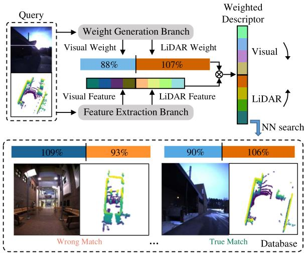
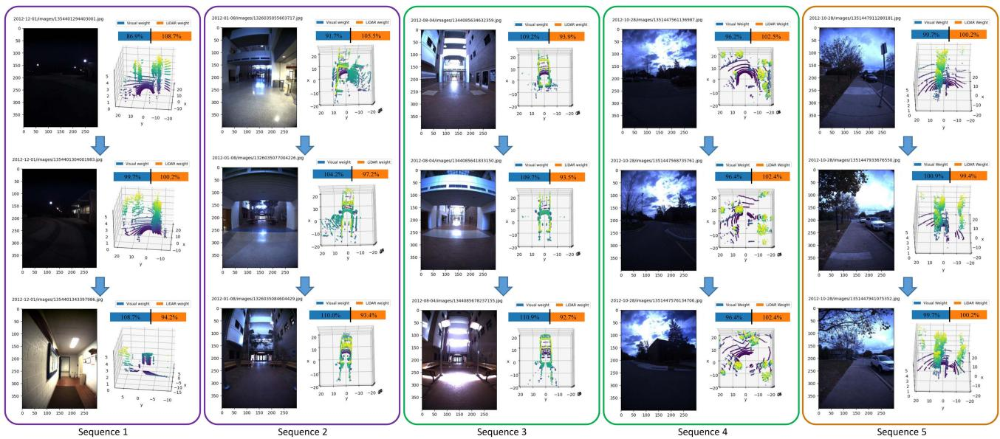

先纠正一个最常见的误解。AdaFusion 的标题里写的是 Visual-LiDAR Fusion With Adaptive Weights for Place Recognition——关键词是 Place Recognition（地点识别）。
它做的不是「估出我精确的 x、y、yaw」（那是里程计/定位），而是更轻的一步：给它一张图和一个点云，它回答「这地方我以前是不是来过」。原文摘要原话说它「retrieves the most similar places（检索最相似的地点）」，§III 末尾用最近邻检索（NN search）去数据库里找匹配。它不是里程计、不是建图、也不是位姿估计。

原图注（Fig. 1）：Place recognition with adaptive weights: Visual and LiDAR features are extracted and weighted so that distinctive modality contributes more in the combined descriptor. The query and the true match have similar adaptive weights, both of which emphasize less on image features for their poor quality for recognition, while the wrong match has lower weight in LiDAR for the featureless corridor. 怎么看这张图：① 这是全文动机的具象版——同一个场景，真匹配对的视觉权重都被压低（因为图质量差）；② 错匹配处在「无结构走廊」，激光也没特征，于是被区分开；③ 看这张图时记住：它的目标是「区分是不是同一个地方」，不是「算出我在哪」。这是 AdaFusion 真实用途的铁证——它在做识别，不是里程计。
路线图把 AdaFusion 标成「注意力式融合网络」，那是在说它的方法形态。但从任务层看，它解决的是「地点识别」而非「多传感器里程计融合」。判断依据就是标题、Index Terms 的 place recognition，以及摘要的 retrieves the most similar places。所以本节如实地把它放在「识别」这一格，而不是「融合里程计」那一格。
原图注（Fig. 2）：The network structure of AdaFusion: Our network is mainly composed of two branches. The feature extraction branch separately deals with images and point clouds to extract visual and LiDAR features with convolution. The weight generation branch firstly performs intra-modality fusion of the multi-scale attention, and then learns the adaptive weights with inter-modality fusion. 怎么看这张图：① 看它确实是两条独立分支——特征提取（上）和权重生成（下）分开走；② 权重分支先「模态内」多尺度注意力，再「跨模态」融合，最后才输出 $\alpha_{\mathrm I},\alpha_{\mathrm P}$；③ 记住融合发生在描述子层面（加权拼接），不是把原始图和点云早早就混在一起。
4. 网络结构与实验数字
把机制落地的关键数字，逐条给你（都在正文 §IV–V）：
项目
数值 / 结论
数据集
Oxford RobotCar（长期多光照/天气）+ NCLT（15 个月、27 序列、含室内外）
评测指标
recall@N / AR@1 / AR@1%（top-N 里至少命中一个真匹配的比例）
Oxford AR@1 / AR@1%
AdaFusion 98.18% / 99.21%；比基线高约 0.1%~0.18%
NCLT AR@1
AdaFusion 95.65%；单视觉支仅 79.34%、单激光支 92.23%
速度
约 5.33 ms/帧（NCLT，实时）；注意力分支带来约 2.9 ms 额外开销
平均权重
数据集平均约 视觉 0.4 / 激光 0.6（相对比率，非绝对值）

原图注（Fig. 7）：Adaptive weights of different places: There are consecutive frames in each sequence. The weights are converted to relative ratios compared to the average visual and LiDAR weights for better illustration. A value higher than 100% means the corresponding modality contributes more in this place than the average contribution of all places. 怎么看这张图：① 这是「为什么需要自适应」最直接的可视化——Seq1 从暗到亮，图像权重上升；Seq2 进走廊，激光权重下降；② 注意纵轴是相对平均权重的比率（>100% 表示比平均多贡献），不是权重绝对值；③ 别把 >100% 误读成「权重大于 1」。
诚实说明：它没有光照/天气的量化分组表
原文没有给出「白天/夜晚/晴天/雨雾」的精确分组 ATE 数字。它对不同光照天气的展示，是靠 Seq1–5 的连续场景变化做定性说明（暗→亮、走廊、室内、室外、双差）。这与 FusionPortable 那种给 night/day ATE 的做法不同。本节不对它编任何量化天气数字——这是原文自承的弱项。
原图注（Fig. 1）：The multi-sensor device and data collection platform: (a) CAD model of the sensor rig. The rig is rigidly mounted on (b) a gimbal stabilizer, (c) a quadruped robot, and (d) an apollo autonomous vehicle. 怎么看这张图：① (a) 是传感器架 CAD，坐标轴红绿蓝配色；② (b)(c)(d) 就是「跨平台」的具象——同一套架子塞进云台、四足、自动驾驶车；③ 这正是「为什么一个算法不能只在一个载体上测」的物理基础。
原图注（Fig. 5）：Trajectories of the algorithms on four sequences: MCR fast 00, campus road day, garden day, escalator day w.r.t. ground truth. 怎么看这张图：① 每条彩色线是某个算法跑出的轨迹，黑色/灰色是真值；② 轨迹偏离真值曲线越远，ATE 越大；③ 可直观看出谁飘了——这正是 ATE 这个指标的来源。
依据在任务层，而非方法层：标题与 Index Terms 明确写 place recognition；摘要说它 retrieves the most similar places；§III 用 NN 检索去数据库找匹配。它只回答「这地方我来过没」，不输出精确位姿。路线图称它「注意力式融合网络」是在说方法形态，但用途是识别，不是里程计。所以判断它是「识别」而非「融合里程计」。
为什么「固定权重拼接」在走廊/夜晚场景会出问题？请引用原文逻辑。
展开查看答案
原文 §I 指出：视觉怕光照/天气、激光在走廊隧道等退化场景点云没特征。若把两模态固定成同等重要，当某个传感器在该环境失效时，弱模态的特征会拉低整体——原话是「feature from less distinctive modality may worsen the performance」。自适应权重的动机，就是让「此刻更有判别力的模态」贡献更大。